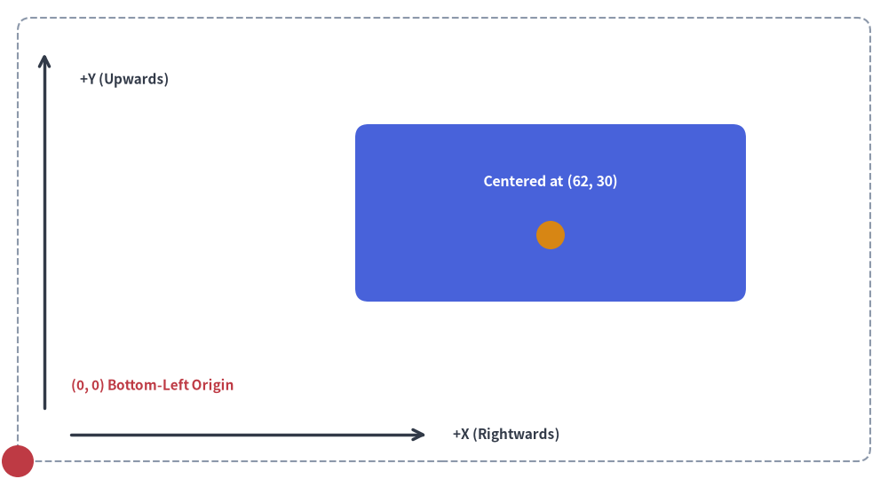
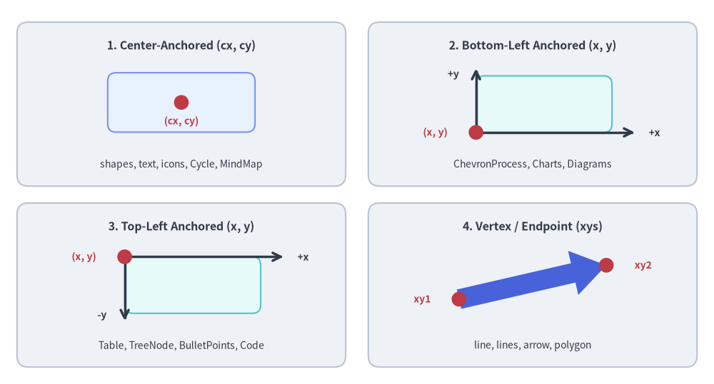
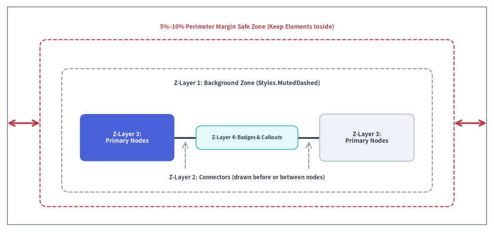
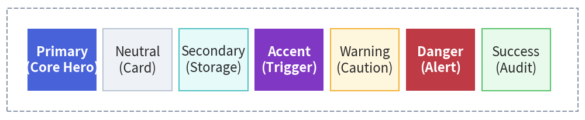

Core Visual Concepts
To create clean, professional illustrations with Drawlib, it is important to understand its underlying geometry and visual design principles.
1. The Cartesian Coordinate System
Drawlib uses a standard mathematical Cartesian coordinate system where the origin (0, 0) is fixed at the bottom-left corner of the canvas:

Source Code
from drawlib.canvas import save, setup
from drawlib.lines import line
from drawlib.shapes import circle, rectangle
from drawlib.styles import Styles
from drawlib.text import text
setup(width=100, height=54, grid=True)
# Canvas boundary frame
rectangle((50, 27), width=96, height=50, style=Styles.MutedDashed.patch(shape_r=1.5))
# Origin marker
circle((2, 2), radius=1.8, style=Styles.DangerFlat)
text((8, 10.5), "(0, 0) Bottom-Left Origin", style=Styles.DangerBold.patch(text_size=11.0, halign="left"))
# Center-based element
rectangle((62, 30), width=44, height=20, style=Styles.PrimaryFlat.patch(shape_r=1.5))
circle((62, 27.5), radius=1.6, style=Styles.WarningFlat)
text((62, 33.5), "Centered at (62, 30)", style=Styles.WhiteBold.patch(text_size=11.5))
# Y-axis
line((5, 8), (5, 48), arrow_head="->", style=Styles.DarkBold)
text((9, 45), "+Y (Upwards)", style=Styles.DarkBold.patch(text_size=11.0, halign="left"))
# X-axis
line((8, 5), (48, 5), arrow_head="->", style=Styles.DarkBold)
text((51, 5), "+X (Rightwards)", style=Styles.DarkBold.patch(text_size=11.0, halign="left"))
save()
- Origin
(0, 0)is at the Bottom-Left:xincreases horizontally to the right.yincreases vertically upwards. (This differs from traditional computer graphics/HTML canvas where(0, 0)is at the top-left).
The 4 Coordinate Anchor Categories
Across Drawlib's components, coordinates follow four consistent anchoring models depending on the component's natural layout geometry:
- Center-Anchored (
(x, y)= center):
Most closed shapes (rectangle,circle,ellipse,donuts,triangle,regularpolygon,star,cylinder,face), icons, text,Cycle, andMindMapNode. (On shapes, icons, and text, the anchor is configurable viastyle.halignandstyle.valign). - Bottom-Left Anchored (
(x, y)= bottom-left):
bubblespeech,ChevronProcess,GridLayout,Pyramid,BoxList,GeoMap, allCharts, andd.draw(xy=...)onDiagramsandGraph. - Top-Left Anchored (
(x, y)= top-left):
Table,TreeNode,BulletPoints, andSourceCode(components that grow downward as rows/lines are added). - Vertex / Endpoint Coordinates:
polygon(xys),arrow(xy1, xy2),arrow_polyline(xys),line(xy1, xy2), andlines(xys).

Source Code
from drawlib.canvas import save, setup
from drawlib.lines import line
from drawlib.shapes import arrow, circle, rectangle
from drawlib.styles import Styles
from drawlib.text import text
setup(width=126, height=68)
hdr_ts = Styles.DarkBold.patch(text_size=11.5)
coord_ts = Styles.DangerBold.patch(text_size=10.0)
axis_ts = Styles.DarkBold.patch(text_size=10.0)
sub_ts = Styles.Dark.patch(text_size=10.0)
# Panel 1 (Top-Left): Center-Anchored (cx, cy)
rectangle((32.0, 49.5), width=58.0, height=29.0, style=Styles.Neutral.patch(shape_r=2.0))
text((32.0, 59.8), "1. Center-Anchored (cx, cy)", style=hdr_ts)
rectangle((32.0, 49.8), width=26.0, height=10.5, style=Styles.PrimaryNeutral.patch(shape_r=1.5))
circle((32.0, 49.8), radius=1.3, style=Styles.DangerFlat)
text((32.0, 46.5), "(cx, cy)", style=coord_ts)
text((32.0, 38.8), "shapes, text, icons, Cycle, MindMap", style=sub_ts)
# Panel 2 (Top-Right): Bottom-Left Anchored (x, y)
rectangle((94.0, 49.5), width=58.0, height=29.0, style=Styles.Neutral.patch(shape_r=2.0))
text((94.0, 59.8), "2. Bottom-Left Anchored (x, y)", style=hdr_ts)
rectangle((96.0, 49.5), width=24.0, height=10.0, style=Styles.SecondaryNeutral.patch(shape_r=1.5))
line((84.0, 44.5), (112.0, 44.5), arrow_head="->", style=Styles.DarkBold)
text((115.5, 44.5), "+x", style=axis_ts)
line((84.0, 44.5), (84.0, 55.8), arrow_head="->", style=Styles.DarkBold)
text((80.0, 54.8), "+y", style=axis_ts)
circle((84.0, 44.5), radius=1.3, style=Styles.DangerFlat)
text((76.8, 44.5), "(x, y)", style=coord_ts)
text((94.0, 38.8), "ChevronProcess, Charts, Diagrams", style=sub_ts)
# Panel 3 (Bottom-Left): Top-Left Anchored (x, y)
rectangle((32.0, 17.5), width=58.0, height=29.0, style=Styles.Neutral.patch(shape_r=2.0))
text((32.0, 27.8), "3. Top-Left Anchored (x, y)", style=hdr_ts)
rectangle((34.0, 17.5), width=24.0, height=10.0, style=Styles.SecondaryNeutral.patch(shape_r=1.5))
line((22.0, 22.5), (50.0, 22.5), arrow_head="->", style=Styles.DarkBold)
text((53.5, 22.5), "+x", style=axis_ts)
line((22.0, 22.5), (22.0, 11.2), arrow_head="->", style=Styles.DarkBold)
text((18.0, 12.2), "-y", style=axis_ts)
circle((22.0, 22.5), radius=1.3, style=Styles.DangerFlat)
text((14.8, 22.5), "(x, y)", style=coord_ts)
text((32.0, 6.8), "Table, TreeNode, BulletPoints, Code", style=sub_ts)
# Panel 4 (Bottom-Right): Vertex / Endpoint (xys)
rectangle((94.0, 17.5), width=58.0, height=29.0, style=Styles.Neutral.patch(shape_r=2.0))
text((94.0, 27.8), "4. Vertex / Endpoint (xys)", style=hdr_ts)
arrow((81.0, 15.0), (107.0, 21.0), tail_width=3.5, head_width=8.0, head_length=6.0, style=Styles.PrimaryFlat)
circle((81.0, 15.0), radius=1.3, style=Styles.DangerFlat)
text((74.5, 15.0), "xy1", style=coord_ts)
circle((107.0, 21.0), radius=1.3, style=Styles.DangerFlat)
text((113.5, 21.0), "xy2", style=coord_ts)
text((94.0, 6.8), "line, lines, arrow, polygon", style=sub_ts)
save()
2. Canvas Sizing & Virtual Units
Canvas dimensions specified in setup(width=..., height=...) represent arbitrary virtual coordinate units, not physical pixels.
Drawlib maps these coordinate units to high-resolution display pixels automatically.
Recommended Canvas Dimensions
Choose dimensions that match the natural aspect ratio of your diagram:
- Wide Schemas (16:9 / Landscape):
width=120,height=50orwidth=140,height=60 - Balanced Cards (4:3):
width=100,height=75 - Square / Symmetrical:
width=100,height=100
3. Perimeter Margins, Z-Order Layering & Geometry Helpers
A common mistake when generating diagrams is placing elements too close to the canvas edges or drawing elements out of z-order:
- Keep 5%–10% Perimeter Margin: Leave breathing room around all four borders. For a canvas with
width=100andheight=60, avoid placing text or shape boundaries belowx=5, abovex=95, belowy=5, or abovey=55. - 4-Layer Painter's Algorithm Z-Order: Drawlib renders elements in the exact order they are called (back-to-front). Follow this 4-layer drawing sequence so lines never cut across node labels and backgrounds never obscure foreground nodes:
- Layer 1 — Background Zones: VPCs, subnets, and boundary containers (e.g.
rectangle(..., style=Styles.MutedDashed)). - Layer 2 — Connectors / Lines: Inter-service arrows and communication links (
line,line_curved,lines). - Layer 3 — Primary Nodes / Shapes: Service cards, databases, icons, and actors (
rectangle,circle,cylinder). - Layer 4 — Callouts / Badges: Floating protocol badges, status indicators, and speech callouts (
bubblespeech,text).
- Layer 1 — Background Zones: VPCs, subnets, and boundary containers (e.g.
- Dynamic Bounding Boxes with
drawlib.math.get_center_and_size(): Instead of manually calculating container centers and dimensions around a group of nodes, pass their coordinate list toget_center_and_size(points)to obtain((center_x, center_y), (width, height))automatically.

Source Code
from drawlib.canvas import save, setup
from drawlib.lines import line
from drawlib.shapes import rectangle
from drawlib.styles import Styles
from drawlib.text import text
setup(width=126, height=58)
# Outer canvas boundary frame & inner 5%-10% Safe Margin Zone
rectangle((63.0, 29.0), width=122.0, height=54.0, style=Styles.MutedOutline)
rectangle((63.0, 27.0), width=106.0, height=42.0, style=Styles.DangerDashed.patch(shape_r=2.0))
text((63.0, 51.5), "5%–10% Perimeter Margin Safe Zone (Keep Elements Inside)", style=Styles.DangerBold.patch(text_size=10.5))
line((2.5, 27.0), (9.5, 27.0), arrow_head="<->", style=Styles.DangerBold)
line((116.5, 27.0), (123.5, 27.0), arrow_head="<->", style=Styles.DangerBold)
# Z-Layer 1: Background Zone
rectangle((63.0, 25.0), width=96.0, height=32.0, style=Styles.MutedDashed.patch(shape_r=2.0))
text((63.0, 37.5), "Z-Layer 1: Background Zone (Styles.MutedDashed)", style=Styles.DarkBold.patch(text_size=10.5))
# Z-Layer 2: Connectors (drawn before or between nodes)
line((31.0, 24.0), (95.0, 24.0), arrow_head="->", style=Styles.DarkBold.patch(line_width=2.5))
text((63.0, 12.5), "Z-Layer 2: Connectors (drawn before nodes)", style=Styles.DarkBold.patch(text_size=10.0))
line((47.0, 15.5), (47.0, 23.0), arrow_head="->", style=Styles.MutedDashed)
line((79.0, 15.5), (79.0, 23.0), arrow_head="->", style=Styles.MutedDashed)
# Z-Layer 3: Primary Nodes
rectangle(
(31.0, 24.0),
width=26.0,
height=13.0,
style=Styles.PrimaryFlat.patch(shape_r=1.5),
text="Z-Layer 3:\nPrimary Node",
text_style=Styles.WhiteBold.patch(text_size=10.5),
)
rectangle(
(95.0, 24.0),
width=26.0,
height=13.0,
style=Styles.Neutral.patch(shape_r=1.5),
text="Z-Layer 3:\nPrimary Node",
text_style=Styles.DarkBold.patch(text_size=10.5),
)
# Z-Layer 4: Badges & Callouts (drawn last on top of connectors)
rectangle(
(63.0, 24.0),
width=28.0,
height=7.0,
style=Styles.SecondaryNeutral.patch(shape_r=1.5),
text="Z-Layer 4: Badge",
text_style=Styles.DarkBold.patch(text_size=10.0),
)
save()
4. The Semantic Design System & Color Discipline
Professional illustrations maintain visual clarity by structuring colors around Drawlib's core semantic roles and following the 50%+ Neutral-Grounded Architecture discipline:
[!IMPORTANT] Avoid Rainbow Chaos (50%+ Neutral-Grounded Architecture): Never color every box with saturated fills (
PrimaryFlat,AccentFlat,SuccessFlat,WarningFlat). Overly colorful diagrams look amateurish and cause visual fatigue.
- Ground 50% or more of nodes in calm neutral or tinted-neutral cards:
Styles.Neutral,Styles.NeutralFlat,Styles.PrimaryNeutral,Styles.SecondaryNeutral.- Reserve saturated hero fills (
Styles.PrimaryFlat,Styles.AccentFlatwithtext_style=Styles.WhiteBold) strictly for 1–2 primary focal points.- Use
Styles.MutedDashedorStyles.Mutedfor boundary containers, VPCs, and clusters.- Use
Styles.DarkBoldorStyles.DarkFlatfor clean, neutral connection lines.

Source Code
from drawlib.canvas import save, setup
from drawlib.shapes import rectangle
from drawlib.styles import Styles
setup(width=126, height=32)
ts_white = Styles.WhiteBold.patch(text_size=10.0)
ts_dark = Styles.DarkBold.patch(text_size=10.0)
# Neutral Foundation / Subnet Boundary (Muted)
rectangle((63.0, 16.0), width=120.0, height=26.0, style=Styles.MutedDashed.patch(shape_r=2.0))
# 7 Semantic Roles
roles = [
(13.8, "Primary\n(Hero)", Styles.PrimaryFlat, ts_white),
(30.2, "Neutral\n(Card)", Styles.Neutral, ts_dark),
(46.6, "Secondary\n(Storage)", Styles.SecondaryNeutral, ts_dark),
(63.0, "Accent\n(Trigger)", Styles.AccentFlat, ts_white),
(79.4, "Warning\n(Caution)", Styles.WarningNeutral, ts_dark),
(95.8, "Danger\n(Alert)", Styles.DangerFlat, ts_white),
(112.2, "Success\n(Audit)", Styles.SuccessNeutral, ts_dark),
]
for cx, label, box_style, txt_style in roles:
rectangle((cx, 16.0), width=15.0, height=18.5, style=box_style.patch(shape_r=1.2), text=label, text_style=txt_style)
save()
- Primary Anchor (
Styles.PrimaryFlat): Central workflow spine, core microservices, and primary subject matter (reserved for 1–2 hero elements). - Neutral Grounding (
Styles.Neutral,Styles.PrimaryNeutral,Styles.SecondaryNeutral): General worker nodes, supporting services, and calm card surfaces that provide breathing room for the eye. - Functional Semantics (
Styles.Accent,Styles.Warning,Styles.Danger,Styles.Success): Auxiliary events, warnings, alerts, and verified deliverables used purposefully where their functional meaning applies. - Muted Structural Base (
Styles.Muted): Neutral containers, group boundaries, subnets, and grouping boxes (Styles.MutedFlat,Styles.MutedDashed).
5. Development Overlay: Coordinate Grids
While prototyping, enable the coordinate grid to verify alignments:
# In code:
setup(width=100, height=60, grid=True)
Or via CLI flag without changing code:
$ uv run drawlib show my_diagram.py -g -o test_grid.png